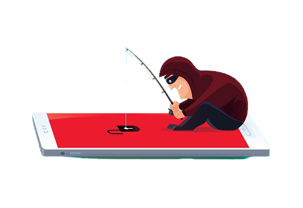

Phishing kan være hvor man for sendt falske mails fra en hacker som udgiver sig for at være din bank, facebook, eller andre steder med kodeord, og oplysninger som en hacker kunne være interesseret i. De sender så et link, som er en kopi af hjemmesiden hvor, hvis man skriver sin kode, får stjålet sine oplysninger og hackeren får adgang til den konto. Når de har adgang kan de sende links videre til ens venner og på den kan det sprede sig hurtigt. Så hvis du får links af dine venner så kig lige ekstra godt på dem, og hvis du er i tvivl så spørg dem lige og det er dem der har sendt det.
Kig ALTID oppe til venstre af søgefeltet efter hængelåsen, hængelåsen betyder at hvis man skriver passwords eller kreditkort information så kan dem som har hjemmesiden ikke se det. man skal dog stadig være påpasselig med at dele koder på chat , men bare fordi der er en hængelås betyder det ikke at du er sikker. Tjek altid linket og sørg for at det er rigtigt. Hvis du får mails hvor du er i tvivl, så kan du gå manuelt ind på hjemmesiden gennem en browser, i stedet for at trykke på linket i mailen. Husk også at tjekke mailadressen, ikke bare afsenderen. Hvis du ikke kan se adressen direkte så klik på navnet der står der og så skulle du gerne kunne se adressen. Sørg for at adressen er den rigtige. hvis du får en mail fra din bank vil de altid skrive fulde navn og ikke bare en hilsen.
